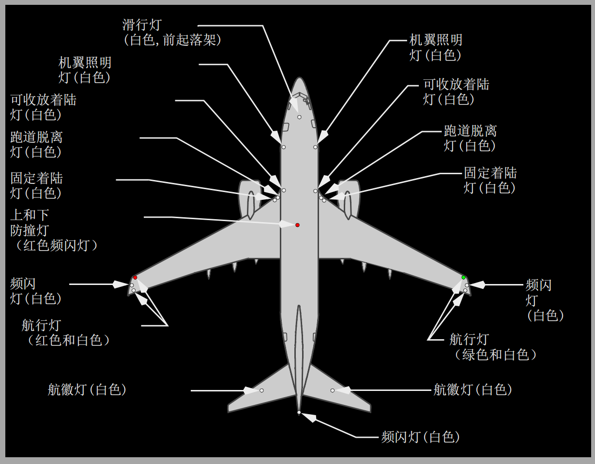

1 航徽（LOGO）灯电门
OFF（关） – 垂直尾翼两侧的航徽灯熄灭。
ON（开） – 航徽灯亮。
2 航行（POSITION）灯电门
STROBE & STEADY（频闪和常亮） – 翼尖的红色和绿色航行灯，翼尖后缘的白色航行灯以及翼尖和机尾频闪灯亮。
OFF（关） – 翼尖的红色和绿色航行灯，翼尖后缘的白色航行灯以及翼尖和机尾频闪灯灭。
STEADY（常亮） – 翼尖的红色和绿色航行灯和翼尖后缘白色航行灯亮。
3 轮舱（WHEEL WELL）灯电门
OFF（关） – 三个轮舱灯熄灭。
ON（开） – 轮舱灯亮。
4 机翼（WING）照明灯
OFF（关） – 机翼前部机身上的机翼前缘灯熄灭。
ON（开） – 机翼前缘灯亮。
5 防撞灯（ANTI COLLISION）电门
OFF（关） – 机身上面和下面的红色频闪/旋转式信标灯熄灭。
ON（开） – 红色频闪/旋转式信标灯亮。

航徽灯
航徽灯安装在每个水平安定面的表面上，照亮垂直安定面的两边。
航行灯(按选型稍有不同)
航行灯为标准的红色（左翼尖小翼底部前端），绿色（右翼尖小翼底部前端）和白色（两个翼尖小翼底部后端）
频闪灯(按选型稍有不同)
三个高亮度的白色频闪灯分别安装在左机翼翼尖小翼前端、右机翼翼尖小翼前端和尾部的整流罩上。
防撞灯
两个红色的防撞频闪灯分别被安装在机身的顶部和底部。
机翼照明灯
机翼照明灯安装在机身上并照明机翼的前缘。
轮舱灯
轮舱灯安装在前起落架和每个主起落架的轮舱内。